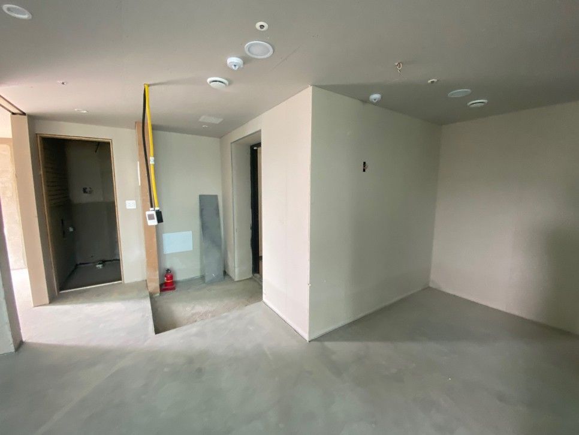
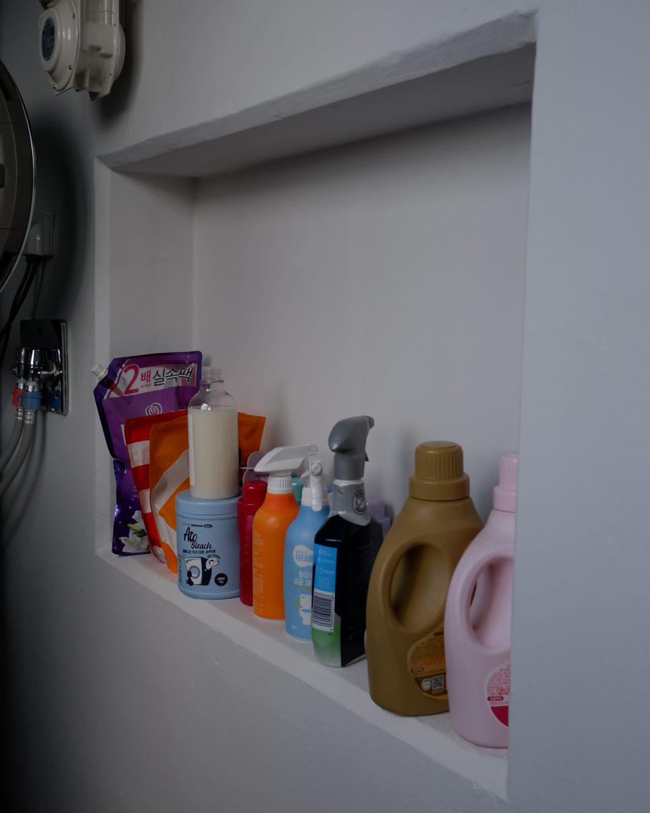
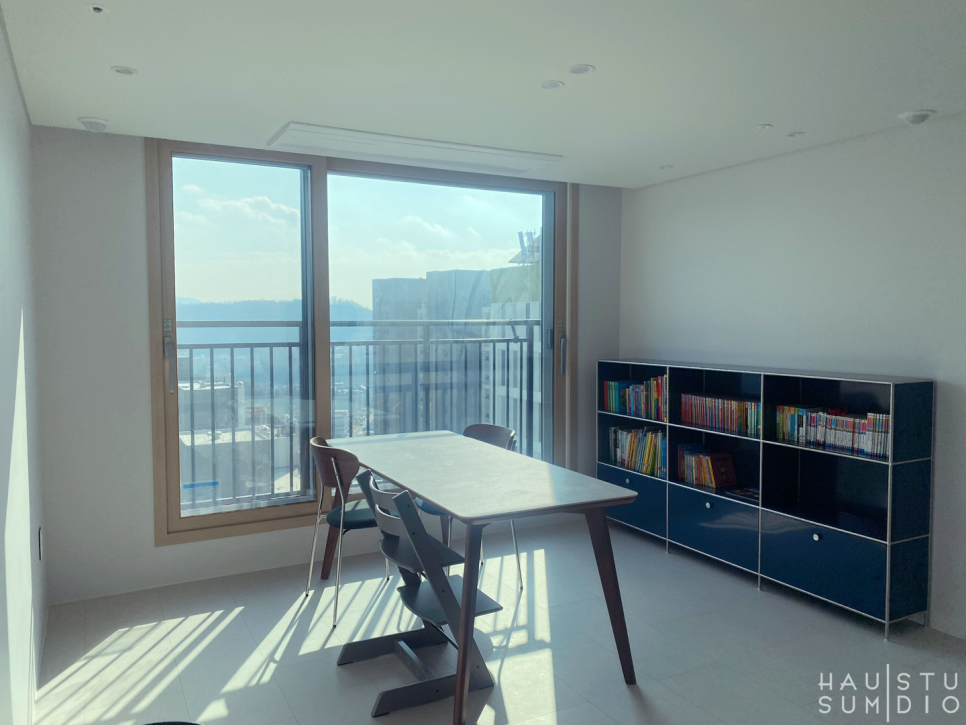
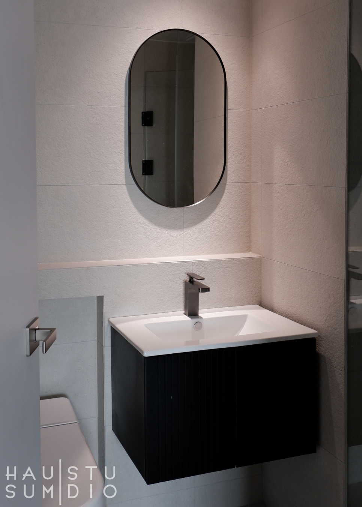

지축 나인포레 20py
Design : HAUSUM STUDIO
2022 DEC.
안녕하세요. 하우섬스튜디오입니다!
오늘 소개드릴 공간은 고양시에
위치한 20평형 마이너스옵션 신축아파트입니다.
마이너스 옵션의 경우 기본사양만 되어 있고 마감, 비내력벽의 시공이 진행되지 않습니다.
때문에 실거주자의 생활 패턴이나 원하는 컨셉에 맞춰 유동적인 인테리어가 가능합니다!
현관입니다.
현관타일과 강마루의 톤을 맞추어 전체적으로 통일서있는 톤앤매너를
갖추었습니다.
그리고 고객님의 생활 패턴에 맞추어 현관과 복도에 히든 팬트리를
따로따로 구성해드렸습니다.
터닝도어와 타일의 마감, 빌트인 오븐이 딱 떨어지는 가구라인, 문손잡이와 유니크한 타일까지
주방에 위치하던 쪽창을 없애고 세탁실 선반을 구성해드렸습니다.
채광이 좋은 거실뷰입니다.
그리고 대망의 화장실
베이지타일과 블랙포인트로 고급스럽고 시크한 화장실이 완성되었습니다!
도장마감과 무몰딩으로 진행되어 더욱 깔끔하고 미니멀한 인테리어가
완성되었습니다.
더욱 섬세하고 기술적인 밑작업을 필요로 하지만
결과물에서 보여주는 만족감은 아주 높습니다.
마이너스옵션으로 거주자의 생활과 취향맞춤형이 가능해진 세 식구의
집이었습니다.